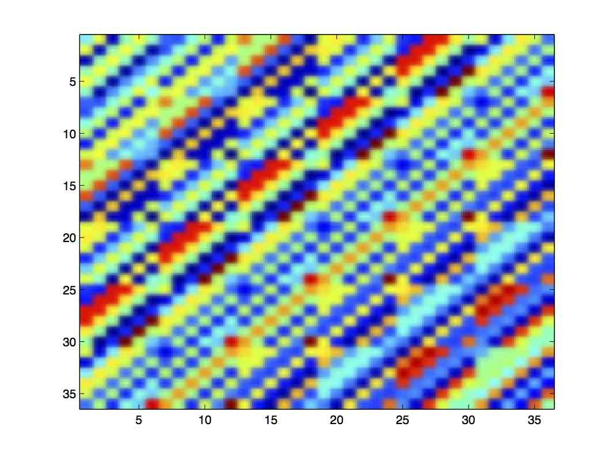

Yuejie Chi
Inverse Problems and Super-Resolution Imaging

The goal of image inversion is to invert the source locations of the wavefields that produced the image acquired at the sensor suite, where the image broadly takes the form of a time series, a space series, a space-time series, a 2-D image, and so on. Typically, one is interested in super-resolution, such that the desired resolution for source locations exceeds the temporal or spatial resolution of the image itself. Conventional methods assume a separable linear model, wherein a sparse parametric modal representation for the source signal is posited and estimates of linear parameters (complex amplitudes of modes) and nonlinear mode parameters (frequency, wavenumber, delay, and/or Doppler) are extracted.
Compressive Sensing (CS) suggests that if a signal can be represented in some basis with a few nonzero coefficients (i.e. admits a sparse representation), then it can be reconstructed from a much smaller number of samples than the ambient dimension. This opens up exciting possibilities in signal processing to consider sparsity as a new prior in algorithm design to increase resolution and reduce complexity. However, the success of CS relies on the assumption that the signal is sparse in an a priori known basis, yet, in spectrum analysis or parameter estimation problems in radar and sonar, there is an inevitable mismatch between the basis assumed in CS and the true basis imposed by the physics of scattering. The performance of CS degenerates considerably in the presence of this basis mismatch, no matter how fine the grid is in the assumed basis.
To address this problem, we develop novel optimization-based algorithms for super-resolution imaging, based on structured matrix completion and atomic norm minimization. The versatility of the optimization framework allows tackling imaging modalities that are out of reach of traditional methods, particularly when the measurements are susceptible to missing data, outliers, calibration errors, poor models of the physical field, and interference from multiple sources. The proposed algorithms leverage physically-meaningful constraints of the propagation field as well as sparsity constraints of the source scene, admit provably accurate estimates under appropriate mathematical models, and provide important insights on the fundamental limits. Built on the theory, our group further designed tailored super-resolution algorithms for single-molecule fluorescence microscopy imaging, which produce high-resolution image reconstructions at a reduced computational time by an order-of-magnitude than the state-of-the-art.
Overview
-
Harnessing Sparsity over the Continuum: Atomic Norm Minimization for Super Resolution [Arxiv]
Y. Chi and M. Ferreira Da Costa, IEEE Signal Processing Magazine, vol. 37, no. 2, pp. 39-57, 2020. -
Convex Optimization Techniques for Super-resolution Parameter Estimation
Y. Chi and G. Tang, ICASSP tutorial, 2016. -
Compressive Parameter Estimation: The Good, The Bad, and The Ugly
Y. Chi and A. Pezeshki, SSP tutorial, 2014.
Super-Resolution Off the Grid
Local Geometry of Nonconvex Spike Deconvolution from Low-Pass Measurements [Arxiv]
M. Ferreira Da Costa and Y. Chi, IEEE Journal on Selected Areas in Information Theory, vol. 4, pp. 1-15, 2023.Compressed Super-Resolution of Positive Sources [Arxiv]
M. Ferreira Da Costa and Y. Chi, IEEE Signal Processing Letters, vol. 28, pp. 56-60, 2021.-
On the Stable Resolution Limit of Total Variation Regularization for Spike Deconvolution [Arxiv]
M. Ferreira Da Costa and Y. Chi, IEEE Trans. on Information Theory, vol. 66, no. 11, pp. 7237-7252, 2020. Short version at CISS 2020. -
Stable Separation and Super-Resolution of Mixture Models [Arxiv]
Y. Li and Y. Chi, Applied and Computational Harmonic Analysis, vol. 46, no. 1, pp. 1-39, 2019. Short versions at ISIT 2015 and SampTA 2015. -
Quantized Spectral Compressed Sensing: Cramer-Rao Bounds and Recovery Algorithms [Arxiv]
H. Fu and Y. Chi, IEEE Trans. on Signal Processing, vol. 66, no. 12, pp. 3268-3279, 2018. -
Off-the-Grid Line Spectrum Denoising and Estimation with Multiple Measurement Vectors [Arxiv] [Code]
Y. Li and Y. Chi, IEEE Trans. on Signal Processing, vol. 64, pp. 1257 - 1269, 2016. -
Compressive Two-Dimensional Harmonic Retrieval via Atomic Norm Minimization [Code]
Y. Chi and Y. Chen. IEEE Trans. on Signal Processing, vol. 63, pp. 1030 - 1042, 2015. -
Robust Spectral Compressed Sensing via Structured Matrix Completion [Arxiv] [Code]
Y. Chen and Y. Chi. IEEE Trans. on Information Theory, vol. 60, pp. 6576-6601, 2014.
Bilinear Inverse Problems and Blind Super-Resolution
-
Manifold Gradient Descent Solves Multi-channel Sparse Blind Deconvolution Provably and Efficiently [Arxiv]
L. Shi and Y. Chi, IEEE Trans. on Information Theory, vol. 67, no. 7, pp. 1-28, 2021. Short version at ICASSP 2020. -
Implicit Regularization in Nonconvex Statistical Estimation: Gradient Descent Converges Linearly for Phase Retrieval, Matrix Completion and Blind Deconvolution [Arxiv]
C. Ma, K. Wang, Y. Chi, and Y. Chen, Foundations of Computational Mathematics, vol. 20, pp. 451-632, 2020. Short version at ICML 2018.
2024 SIAM Activity Group on Imaging Science Best Paper Prize -
Blind Deconvolution from Multiple Sparse Inputs
L. Wang and Y. Chi, IEEE Signal Processing Letters, vol. 23, no. 10, pp. 1384-1388, 2016. -
Guaranteed Blind Sparse Spikes Deconvolution via Lifting and Convex Optimization [Arxiv] [Code]
Y. Chi, IEEE Journal of Selected Topics in Signal Processing - Special Issue on Structured Matrices in Signal and Data Processing, vol. 10, no. 4, pp. 782 - 794, 2016.
Compressed Sensing and Basis Mismatch
-
Compressed Sensing, Sparse Inversion, and Model Mismatch
A. Pezeshki, Y. Chi, L. L. Scharf, and E. K. Chong. Compressed Sensing and Its Applications, Birkhauser, 2015. -
Sensitivity of Basis Mismatch to Compressed Sensing
Y. Chi, L. L. Scharf, A. Pezeshki and R. Calderbank. IEEE Trans. on Signal Processing, vol. 59, pp. 2182 - 2195, 2011.
2013 IEEE Signal Processing Society Young Author Best Paper Award -
Analysis of Fisher Information and the Cramer-Rao Bound for Nonlinear Parameter Estimation after Compressed Sensing
P. Pakrooh, L. L. Scharf, A. Pezeshki, and Y. Chi. International Conference on Acoustics, Speech, and Signal Processing (ICASSP), 2013.
Single-Molecule Localization Microscopy Imaging
-
Super-Resolution Image Reconstruction for High-Density 3D Single-Molecule Microscopy [Code]
J. Huang, M. Sun, J. Ma and Y. Chi, IEEE Trans. on Computational Imaging, vol. 3, no. 4, pp. 763-773, 2017. -
3D Multifocus Astigmatism and Compressed Sensing (3D MACS) Based Superresolution Reconstruction [Code]
J. Huang, M. Sun, K. Gumpper, Y. Chi and J. Ma. Biomedical Optics Express, vol. 6, pp. 902 - 917, 2015. -
Fast Two-dimensional Super-resolution Image Reconstruction Algorithm for Ultra-high Emitter Density [Code]
J. Huang, K. Gumpper, Y. Chi, M. Sun and J. Ma, Optics Letters, vol. 40, pp. 2989 - 2992, 2015.
Source Localization in Sensing Systems
Zoom Out: Abstractions for Efficient Radar Algorithms on COTS Architectures
T. Low, Y. Chi, J. Hoe, S. Kumar, A. Prabhakara, L. Shi, U. Sridhar, N. Tukanov, C. Wang, and Y. Wu, IEEE International Symposium on Phased Array Systems and Technology (PAST), 2022.-
Device-free Multiple People Localization through Floor Vibration
L. Shi, M. Mirshekari, J. Fagert, Y. Chi, H. Y. Noh, P. Zhang, and S. Pan, First ACM Workshop on Device-Free Human Sensing, 2019.